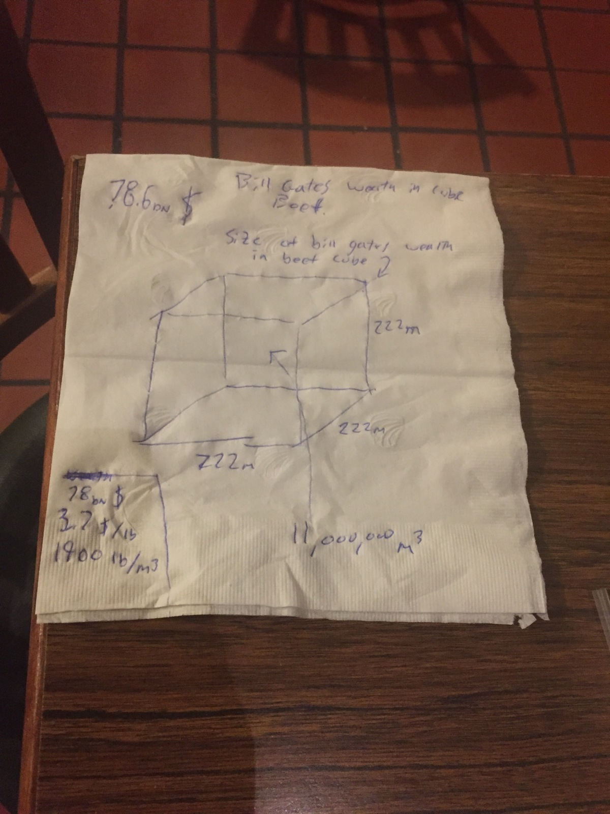
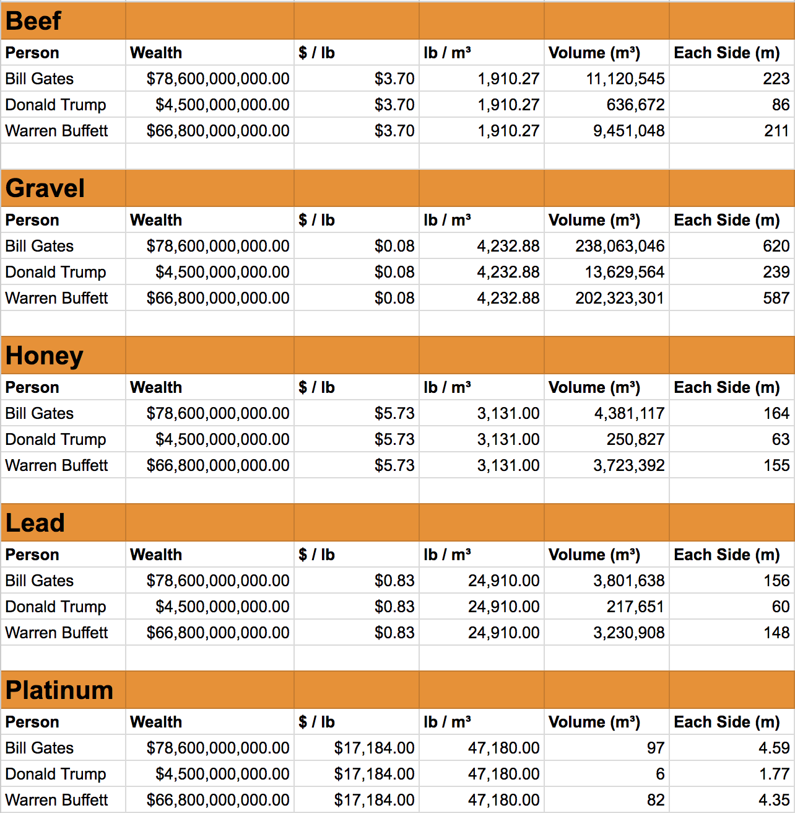

Last night I was out to dinner with a few close friends I've known since high school. We often talk about financial stuff and I jokingly asked the question "If you converted all of Bill Gates wealth into a cube of Beef, how big would that cube be?"
I had brought it up originally because of the classical idea that someone's wealth would be measured in how much cattle they have. Thinking that Bill Gates wealth would be difficult to picture by a number of cows, I thought it would be easier to picture as a cube. And certainly funnier.
The question set off a 15-minute diversion into coming up with the answer.

According to the napkin, Bill Gates is worth 11 million cubic meters of beef. That is a cube with side lengths of 225 meters. 225 meters high, 225 meters wide and 225 meters deep. That's a lot of beef.
There are a few big assumptions that went into our calculation. Such as the density of beef. We found the density to be around 1900 lbs/ m^3. Although the density would be much higher if there were 221 cubic meters on top compressing it. We also used the price 3.70 $ / lb of beef assuming there would be no discount when buying 80 billion dollars at once.
If you'd like to convert your own net worth to cubic beef, I created the Wolfram Alpha widget below. Put in a number and it will spit out the length of each side making up the cube, of beef, representative of your worldly worth.
I suppose my buddy was still entertained by the question after our dinner because he emailed me a spreadsheet this morning containing notable wealthy individuals and their net worth converted to cubes of various substances. Hilarious. Thanks for a great night my friend!
